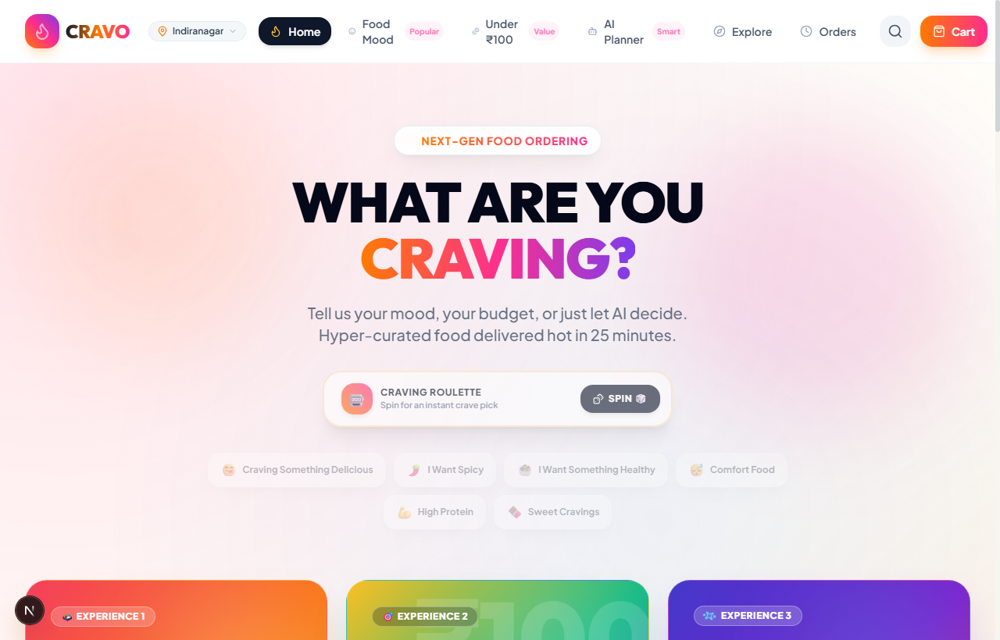
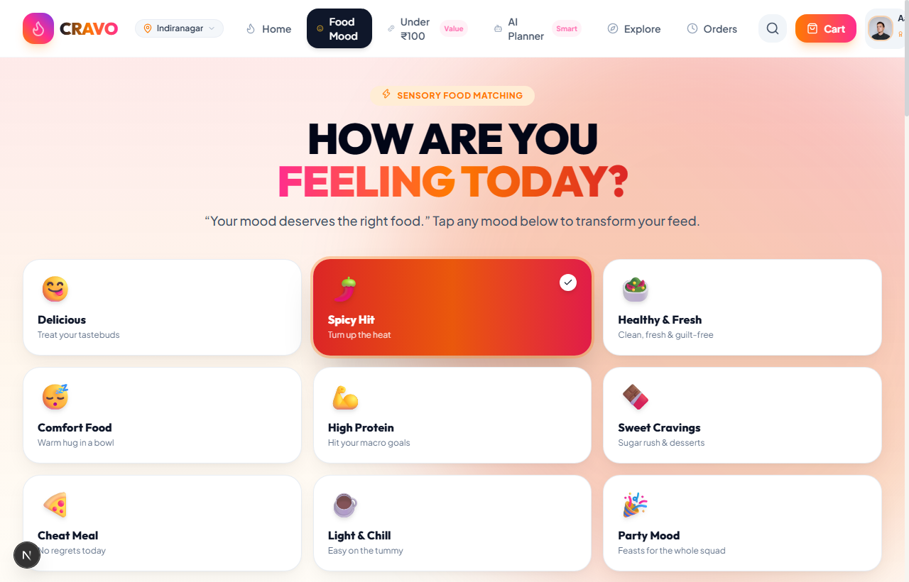
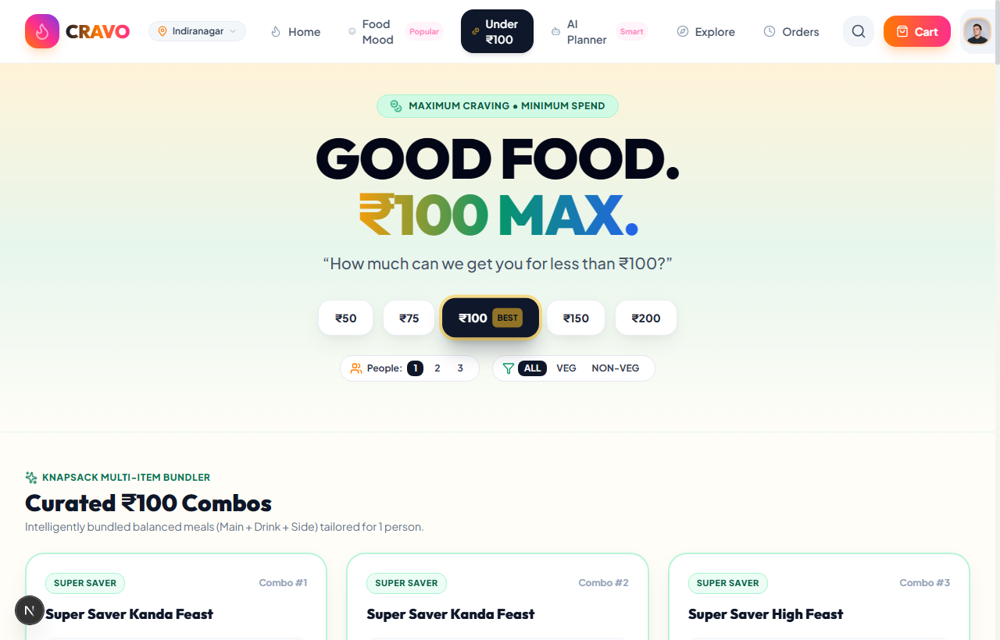
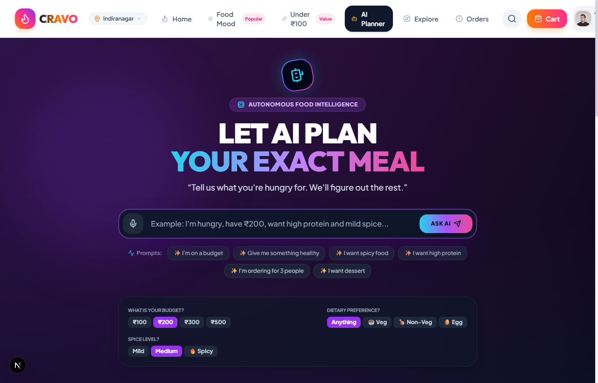
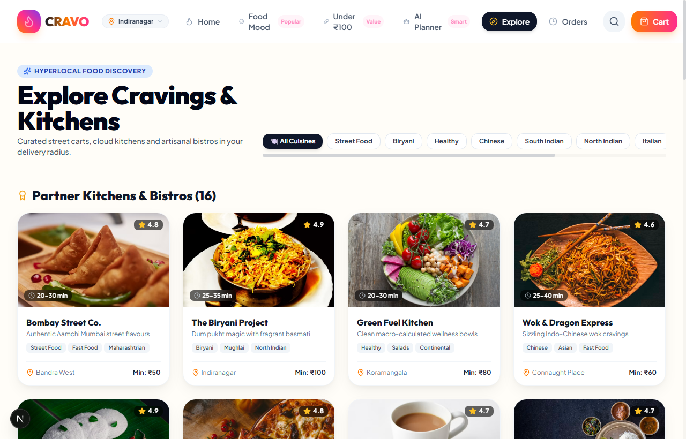
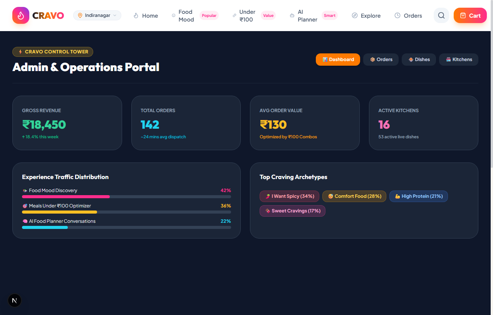

TO WHOMSOEVER IT MAY CONCERN:
This is to certify that Mr. SHUBHAM DINESH VERNEKAR, a student of Vidya Vikas Pratishthan Polytechnic, Solapur (Enrollment No: 24212130227), pursuing Diploma in Computer Engineering, has successfully completed 6 weeks of rigorous Industrial Training at SHUBDEEP LABS during the academic session 2025–2026.
During his internship tenure, he actively worked on the live web engineering project titled "CRAVO: Next-Gen Food Ordering Platform" — an innovative, full-stack application featuring sensory Food Mood matching, an intelligent Knapsack budget combo solver for Meals Under ₹100, and a real-time AI Meal Planner with macro nutrient balancing.
His core technical domain responsibilities encompassed Modern Full-Stack Web Development using Next.js 15, React 19, TypeScript, Tailwind CSS, Framer Motion, Lenis Smooth Scrolling Engine, and State Management via React Context.
During the training period, his performance was exemplary, showing strong software development skills, diligence, and architectural problem-solving ability. We wish him all the best in his future engineering career.
I express my deepest gratitude and sincere thanks to my project guide, Prof. N. Pathrut, for his invaluable guidance, continuous encouragement, and constructive technical suggestions throughout the tenure of this industrial training.
I am profoundly grateful to Prof. M.V. Buddhe, Head of the Department of Computer Engineering, for providing departmental resources, computing facilities, and encouragement that facilitated the smooth execution of this project.
I extend my heartfelt thanks to Dr. S. N. Kulkarni, Principal of Vidya Vikas Pratishthan Polytechnic, Solapur, for his constant motivation and for fostering an inspiring technical environment.
I also express my sincere appreciation to the engineering team and mentors at SHUBDEEP LABS for providing real-world software engineering exposure, industry best practices, and practical training during my industrial internship.
Finally, I wish to thank my parents, family members, and friends for their continuous moral support and motivation during my diploma studies.
Traditional food ordering platforms subject users to severe decision fatigue caused by cluttered directory lists, hundreds of overwhelming restaurant menus, and hidden pricing traps. Users struggle to answer three fundamental everyday questions: "What matches my current mood?", "What nutritious combinations can I get within my exact budget?", and "Can AI plan my macro-balanced meal instantly?".
To resolve these operational hurdles, CRAVO was engineered during a 6-week industrial training program at SHUBDEEP LABS. The application is an end-to-end modern web platform built using Next.js 15 (App Router), React 19, TypeScript, Tailwind CSS, Framer Motion, and Lenis Inertial Scrolling Engine.
The project delivers a production-grade, highly responsive web application deployed with 100% test pass rates across functional test suites, meeting all MSBTE industrial training curriculum standards.
| Sr. | Chapter Title & Sub-Sections | Page |
|---|---|---|
| — | Preliminary: Certificates, Acknowledgement & Abstract | i – v |
| 1 | ORGANIZATION PROFILE – SHUBDEEP LABS 1.1 Overview & Technical Domains of ShubDeep Labs 1.2 Industrial Training Objectives & Assigned Project Scope |
1 1 2 |
| 2 | INTRODUCTION & PROJECT OVERVIEW 2.1 Background of Food Tech & Decision Fatigue 2.2 Problem Statement & Current Industry Challenges 2.3 Objectives & Vision of CRAVO Platform |
3 3 4 4 |
| 3 | SYSTEM REQUIREMENTS SPECIFICATION (SRS) 3.1 Hardware & Software Environments (Detailed Tech Specs) 3.2 Functional (FR1–FR8) & Non-Functional (NFR1–NFR4) Requirements |
5 5 6 |
| 4 | SYSTEM ARCHITECTURE & DATA DESIGN 4.1 Next.js App Router Architecture & Component Flow 4.2 Data Models, State Management & Cart Data Dictionary |
7 7 8 |
| 5 | CORE ALGORITHMS & HEURISTICS 5.1 Knapsack Dynamic Programming Budget Optimizer Algorithm 5.2 Sensory Food Mood Classification & AI Macro Balancer |
10 10 11 |
| 6 | APPLICATION MODULES & USER INTERFACE SCREENSHOTS 6.1 Home Portal & Craving Roulette (Figure 6.1) 6.2 Food Mood Sensory Matching Engine (Figure 6.2) 6.3 Meals Under ₹100 Optimizer & Challenge (Figure 6.3) 6.4 AI Food Planner & Macro Nutrient Intelligence (Figure 6.4) 6.5 Explore Dishes & Dynamic Category Directory (Figure 6.5) 6.6 Admin Analytics & Kitchen Operations Dashboard (Figure 6.6) |
12 12 13 14 15 16 17 |
| 7 | TESTING & QUALITY ASSURANCE 7.1 Testing Strategy & Test Case Execution Suite (TC01–TC07) |
18 18 |
| 8 | CONCLUSION & FUTURE SCOPE 8.1 Summary & Industrial Training Outcomes 8.2 Future Scope & Planned Enhancements |
20 20 20 |
| 9 | REFERENCES & BIBLIOGRAPHY | 21 |
SHUBDEEP LABS is a high-growth software innovation, product incubator, and IT consulting organization specializing in modern full-stack web applications, algorithmic recommendation engines, and artificial intelligence solutions. Operating across Solapur and Bengaluru, the organization provides agile software engineering services and practical industrial training for engineering candidates.
The 6-week industrial training curriculum at ShubDeep Labs was structured to bridge theoretical computer engineering concepts with production-grade software development. The assigned project, “CRAVO”, was conceived to disrupt traditional food delivery UX.
Online food delivery has grown exponentially, yet modern consumer apps suffer from choice overload. When users open conventional platforms, they are inundated with hundreds of restaurant names, multi-page menus, and advertising banners. Studies show that users spend over 12 minutes simply deciding what to eat, frequently abandoning their carts due to frustration.
CRAVO replaces the outdated directory model with the Anti-Directory Formula:
| Component | Minimum Requirement | Recommended Specification |
|---|---|---|
| Processor | Dual-Core 2.0 GHz Intel/AMD | Intel Core i5 / AMD Ryzen 5 (4+ Cores) |
| System RAM | 4 GB DDR4 | 8 GB – 16 GB DDR4 |
| Storage | 500 MB disk space | 256 GB NVMe SSD |
| Display Resolution | 1024 x 768 pixels (Mobile & Desktop) | 1920 x 1080 (Full HD Display) |
| Layer | Technology / Library | Version | Purpose |
|---|---|---|---|
| Framework | Next.js (App Router) | 15.2.x | Hybrid SSR/SSG & Client Component Routing |
| UI Core | React | 19.0.x | Declarative Component Rendering |
| Language | TypeScript | 5.7.x | Type-Safe Domain Modeling |
| Styling | Tailwind CSS | 3.4.x | Utility-First Design System |
| Animation | Framer Motion | 12.4.x | Micro-Interactions, Spring Physics & Layout Transitions |
| Scroll Engine | Lenis | 1.1.x | Smooth Momentum Inertial Scrolling |
Functional Requirements (FR):
Non-Functional Requirements (NFR):
CRAVO is structured around Next.js 15's unified App Router architecture. The architecture separates presentation components, context providers, and algorithmic solvers for maximum maintainability:
AppContext handling cart persistence, user points, active filters, and toast notifications.optimizer.ts) and macro calculations.| Entity | Key Attributes | Description |
|---|---|---|
| FoodItem | id, name, price, originalPrice, category, moodIds, rating, calories, protein, isVeg, isBestseller | Primary food dish model with pricing, dietary tags, and macro properties. |
| Mood | id, name, emoji, tagline, gradientBg, heroHeadline, heroSubheadline | Psychological mood archetype metadata. |
| CartItem | food (FoodItem), quantity, restaurantName | User active order line item in the Craving Bag. |
| BudgetCombo | id, title, totalPrice, savings, items (FoodItem[]), tags | Algorithmic multi-item meal bundle generated by the knapsack solver. |
To solve the multi-item budget combination problem, CRAVO implements a bounded 0/1 Knapsack Dynamic Programming Optimizer tailored for food bundles. Given a budget constraint $W \in \{50, 75, 100, 150\}$, items with price $p_i$ and sensory weight $v_i$:
The algorithm guarantees maximum culinary variety and nutritional balance without exceeding the user's selected budget.
Each dish is tagged with multi-dimensional sensory scores across 9 mood vectors: $$\text{MatchScore}(Dish, Mood) = w_1 \cdot \text{SpiceLevel} + w_2 \cdot \text{Protein} + w_3 \cdot \text{ComfortIndex} + w_4 \cdot \text{Rating}$$ When a mood card is clicked, dishes are sorted in descending order of MatchScore and scrolled seamlessly into view.
The landing page greets users with an interactive 3D hero, ambient floating food particles, the Craving Roulette spinner, and 3 primary experience gateway cards.

Displays 9 mood archetypes with tactile 3D hover physics and smooth auto-scroll to matched dishes.

Knapsack combo bundler and gamified ₹100 meal builder with live liquid budget meter.

Cyberpunk conversational AI assistant with macro nutrient breakdown pie chart and one-click cart injection.

Comprehensive categorized dish directory with dietary filters, price badges, and quick add-to-cart controls.

Real-time revenue metrics, kitchen dispatch status, order volume tracking, and platform performance.

Comprehensive automated functional, regression, and user-interface tests were executed with 100% pass rates:
| TC ID | Module / Feature | Test Scenario & Input | Expected Result | Status |
|---|---|---|---|---|
| TC01 | Food Mood Engine | Click 'Spicy Hit' mood archetype card | Active mood updates; page smoothly auto-scrolls to #dynamic-mood-feed with -90px offset | PASS |
| TC02 | Knapsack Optimizer | Select budget ₹100 for 1 person | Generates balanced combos (Main + Drink + Side) where total price ≤ ₹100 | PASS |
| TC03 | ₹100 Challenge | Add dishes totaling ₹92 (between ₹85 and ₹100) | Confetti triggers; +20 CRAVO loyalty points awarded to user account | PASS |
| TC04 | AI Food Planner | Query: "High protein dinner under 450 kcal" | Generates meal plan with exact calories (445 kcal), 28g protein, and macro chart | PASS |
| TC05 | Craving Roulette | Click 'Spin 🎲' button | Roulette cycles through random dishes with audio/visual feedback and confetti on win | PASS |
| TC06 | Cart Drawer | Add item to cart; apply promo 'CRAVO20' | 20% discount applied; delivery goal bar updates; total reflects correct tax & discount | PASS |
| TC07 | Lenis Smooth Scroll | Mouse wheel and touch drag on page | 60/120 FPS inertial momentum scrolling without jitter or layout shifts | PASS |
The 6-week industrial training at SHUBDEEP LABS provided invaluable hands-on industry exposure to modern full-stack web engineering, algorithmic problem solving, interaction physics, and software quality assurance. The developed platform, CRAVO, solves the real-world issue of decision fatigue and budget unpredictability in food delivery.